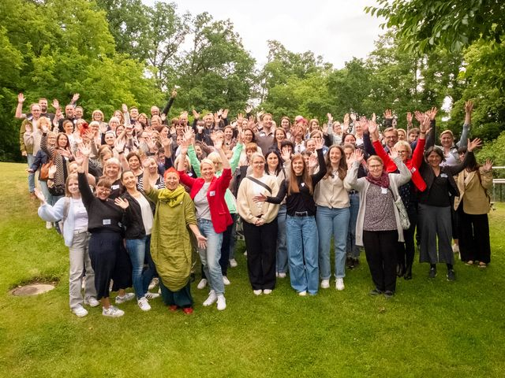

Ein gelungener Tag, mit Begegnung und Wohlfühlen als echte Gewinnfaktoren.
Fachtag Kinder- und Jugendhilfe
Ausgangssituation
Fachkräfte der offenen Kinder- und Jugendarbeit sind gesetzlich verpflichtet, allen jungen Menschen – auch mit Behinderungen – geeignete Angebote bereitzustellen. Der Jahresfachtag 2025 soll leitende Fachkräfte über aktuelle Entwicklungen zum inklusiven Jugendamt informieren und den fachlichen Austausch stärken.
Herausforderung
Fachkräfte erleben Inklusion als zusätzliche Aufgabe bei knappen Ressourcen. „Wo soll man anfangen?“, fragen sich viele. Unbekannte Bedarfe und Unsicherheiten prägen das Thema, statt Neugier und Zuversicht.
Unser Beitrag
Mittels ressourcenorientierter Interviews werden Sorgen, Widersprüche und vorhandene Stärken der Teilnehmenden sichtbar. Auf dieser Basis entsteht gemeinsam mit der Leitung des Jugendamtes ein aktivierendes Tagungskonzept mit einem Wechsel aus Input, Interaktion und Reflexion.
Wirkung
Die Teilnehmenden gewinnen Orientierung über laufende Veränderungen im Jugendamt und erleben Zugehörigkeit und gegenseitige Unterstützung. Durch „playful engagement“ mit Kolleg:innen aus Verwaltung und freien Trägern entsteht Motivation, eigene Beiträge zur Inklusion zu gestalten.